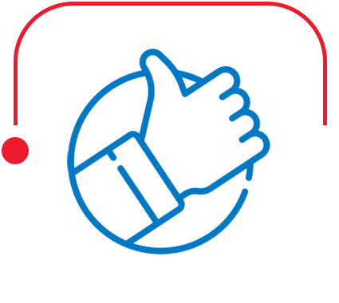

home > 인재채용 > 인재상
인재채용
인재상
one & onlyOne & Only를 실현하는 사람, 바로 코오롱이 원하는 인재입니다.
One & Only는 코오롱인 각자가 가장 중요하게 여겨야 할 핵심가치를 담고 있습니다.
3Ways는 코오롱인의 의사결정 기준이며, 궁극적으로 달성해야 할 코오롱의 모습입니다.
9Practices는 코오롱인이 모든 일상 속에서 One & Only Way를 실현할 수 있는 구체적인 방법입니다.
고객으로부터
가장 사랑받는 코오롱
- 고객으로부터 출발한다.
- 기대 이상의 가치를 제공한다.
- 고객의 성공에 기여한다.

독특하고
차별화된 우리
- 한 발 앞서 시장을 읽고 움직인다.
- 경계를 넘어 협력한다.
- 새로운 것에 도전한다.
최고의
경쟁력을 갖춘 나
- 높은 목표수준을 갖는다.
- 철저하게 준비한다.
- 될 때까지 실행한다.